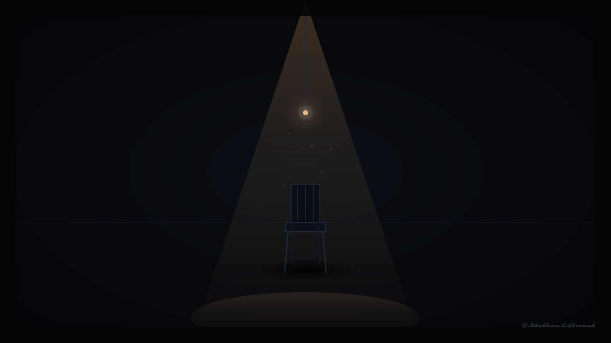
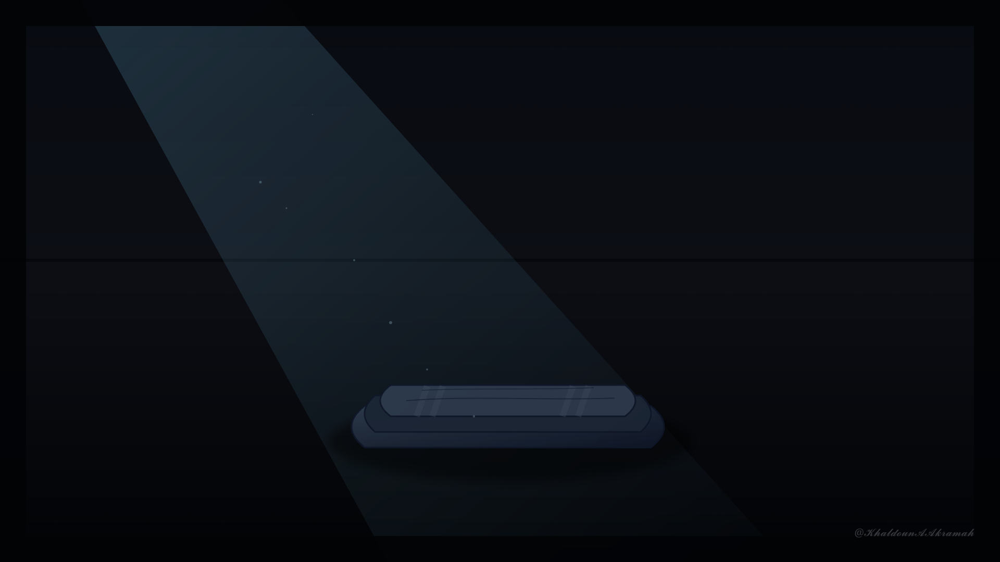

صيدنايا
ذاكرة الغياب واستحقاق المساءلة
سرد بصري وثائقي مكرس لتوثيق فصول التغييب القسري، وصون الذاكرة الأخلاقية للضحايا والناجين في سياق العدالة السورية.
الأطروحة البصرية والتحريرية
"الذاكرةُ ليست رفاهيةً فكرية، بل هي درعنا الأخير في مواجهة الاستبداد وسحق الكرامة الإنسانية."
بين سياق تاريخي اتسم بالرعب المنظم وعقود التغييب، نطرح الحقيقة كوثيقة جنائية تدين عصر الجلاد، وتصنع وعياً شعبياً يرى العدالة كمسار لا كخيار انتقامي.
صيدنايا العسكري
آلة التغييب والهندسة الصامتة
سجن عسكري يقع شمال دمشق، صُمّم بهيكل خرساني ثلاثي الأجنحة ليكون مساحة مغلقة للغياب القسري والتصفية الصامتة بعيداً عن الرقابة الدولية والمحاسبة القانونية.
يمثل المعتقل البنية المادية الفظيعة للمنظومة الأمنية، حيث تفصل جدرانه بين الضحية الخاضعة للتغييب وعالم الحقيقة الخارجي.
شرف الشهادة
الشهادة الشفوية كفعل مقاومة
الشهادات الصادرة من الناجين تمثل صوتاً أخلاقياً يرفض التزييف ويفضح المنظومة الفاسدة والمحاكمات الصورية غير العادلة.
كل شهادة هي وثيقة تاريخية، وصوت الناجي هو الجسر الوحيد الذي يربط بين ضحايا الغياب ومستقبل السعي للمحاسبة.

صورة أرشيفية: كرسي تحقيق فارغ يسلط عليه مصباح معلق، يجسد غياب الشهود وعتمة التحقيق.

توثيق جنائي: بطانية صوفية مطوية متروكة على الأرض، ترمز للغياب والفقدان المستمر.
جرح الغياب
مأساة المفقودين ولوعة الانتظار
خلف الأسوار الخرسانية الصامتة، يغيب المعتقلون قسراً، وتترك عائلاتهم في مواجهة انتظار أبدي لا يحمل إجابة ولا كشفا لمصيرهم.
الغياب في صيدنايا ليس انتهاءً للقصة، بل هو مأساة مستمرة تمتد إلى أسر الضحايا، لتصبح الحقيقة المفقودة هي المطالبة الأساسية التي ترفض التسوية.
شهادات المادة والرمز
تنطق جدران صيدنايا وعناصرها المادية بما عجز عن نقله المحبوسون؛ فكل باب وجدار وخدش يحمل قصة غياب ووثيقة صامتة.
الباب الحديدي العتيق
شاهد صامت موصد يعزل زنزانة المعتقل عن نسائم الحرية والضوء الخارجي، يمثل نهاية العالم المادي للضحية.
الجدار الخرساني البارد
كتل إسمنتية صلبة تمتص الدفء والأصوات، وتحفظ صدى التنهيدات والصلوات الخافتة في جوف العتمة.
الخدوش وعلامات الأيام
خطوط حُفرت بأظافر الأسرى أو حواف الحجارة لتعداد الأيام وتوثيق الوجود وسط النسيان المفروض.
استحقاق العدالة
المساءلة وكشف زيف الفساد القضائي
وثق المعتقلون الطبيعة الصورية للمحاكم العسكرية وفساد اللجان القضائية؛ حيث تُسقط تهم التخابر بمبالغ طائلة للمتشبثين بمقاعد السلطة.
إن التأسيس لبناء دولة الكرامة يتطلب محاسبة المسؤولين، وكشف الحقيقة دون محاباة، لضمان عدم عودة عصور الخراب وتكرار سياقات القمع.
عهد صون الحقيقة
"هل سنحمي هذه الذاكرة لتكون درعنا الأخلاقي ضد الاستبداد... أم سنترك الحقيقة تضيع في غياهب الضجيج العابر؟"
التاريخ لا يرحم الصامتين، والعدالة ميثاق مع الضحايا.
صون الذاكرة والمسؤولية المستمرة
تم إعداد هذا العرض الوثائقي وصياغة أطروحته البصرية والتحريرية وفقاً لتعاليم ومعايير نظام خلدون المرجعي للخطوط والشرائح البصرية.